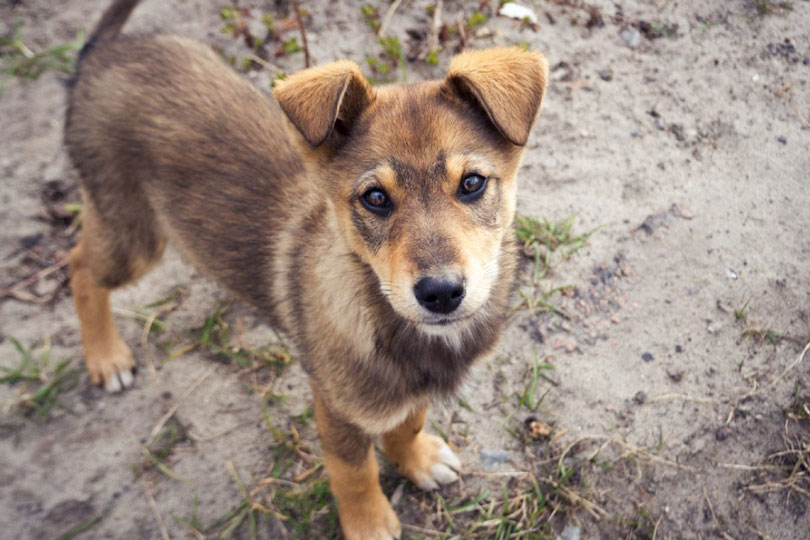

Principais artigos do jornal
Notícias de última hora
Nosso Querido Amigo José Procura por Bolota Aqui no nosso amado bairro Guarani, todos nós conhecemos o senhor José e seu fiel companheiro, Bolota. Infelizmente, Bolota desapareceu na manhã de ontem e José está desesperadamente à procura de seu amigo de quatro patas. Como todos nós sabemos, Bolota, um vira-lata de porte médio, é mais do que um simples animal de estimação para José. Ele é um amigo leal e um membro querido de nossa comunidade. Quando Bolota não apareceu para o café da manhã de ontem, algo muito incomum para o sempre pontual Bolota, José percebeu que algo estava errado. Após uma busca minuciosa, ficou claro que Bolota havia desaparecido. Nós, como uma comunidade unida, já começamos a ajudar na busca. Panfletos com a foto de Bolota estão sendo distribuídos e a história está sendo compartilhada em nossas redes sociais. José está oferecendo uma recompensa para quem encontrar Bolota e trazê-lo de volta para casa. Ele diz: “Bolota é mais do que apenas um cachorro para mim. Ele é meu amigo, meu companheiro. Eu só quero que ele volte para casa”. Se você tiver alguma informação sobre o paradeiro de Bolota, por favor, entre em contato com José ou com a delegacia local. Vamos ajudar a reunir Bolota com seu dono preocupado.
Poemas do pequeno Guarani
A primavera chegou, trazendo cores e aromas As flores se abrem, os pássaros cantam, as abelhas zumbem A natureza se renova, com beleza e harmonia E o sol brilha, aquecendo os corações. A primavera é tempo de amor, de esperança e de alegria De celebrar a vida, de agradecer e de sorrir De plantar novos sonhos, de colher novos frutos E de compartilhar a felicidade com quem se quer bem. A primavera é uma dádiva, um presente dos céus Que nos convida a admirar, a contemplar e a cuidar Do nosso planeta, da nossa casa, do nosso lar E de tudo o que nele há de bom e de belo.
Notícias internacionais
Foto vencedora do World Nature Photography